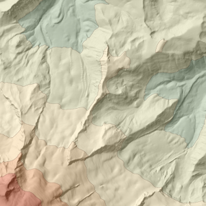
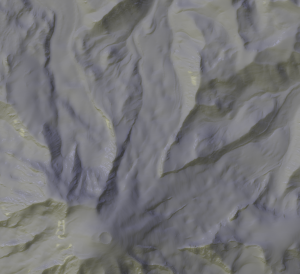
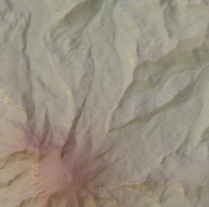

This example colours elevation in 7 discrete colour bands with a fine contour line between each band.
|
dem.png: |
This script uses phong shaded relief to create two relief maps of a DEM with a blue (cold) light slightly clockwise of NW and a yellow (warm) light slightly anticlockwise. The 'warm' relief is calculated at a coarse scale to emphasise the larger scale features in the DEM (lines 22-30). The two images are then blended and saved as file (line 33).
Contours are threaded through the DEM at 100m vertical interval (line 37) and coloured a transparent brown (line38).
Finally, the relief map is blended with the original coloured DEM with the contours overlaid to produce the final output.
|
relief.png: dem.png: |